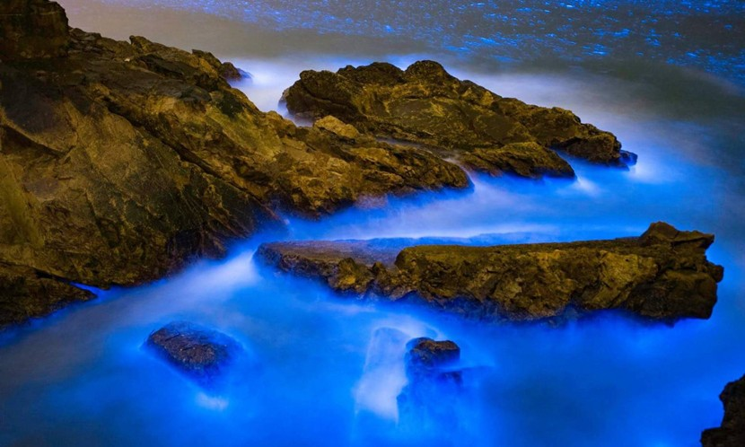
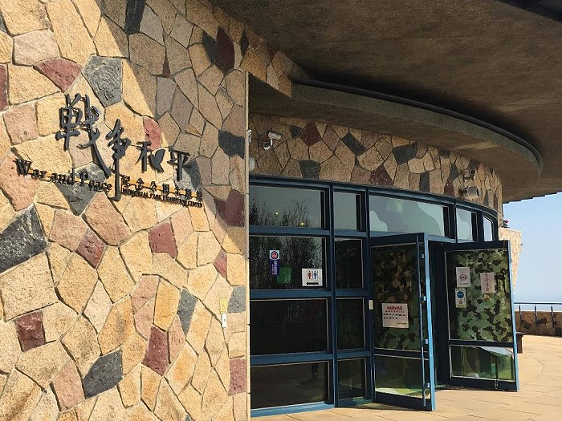
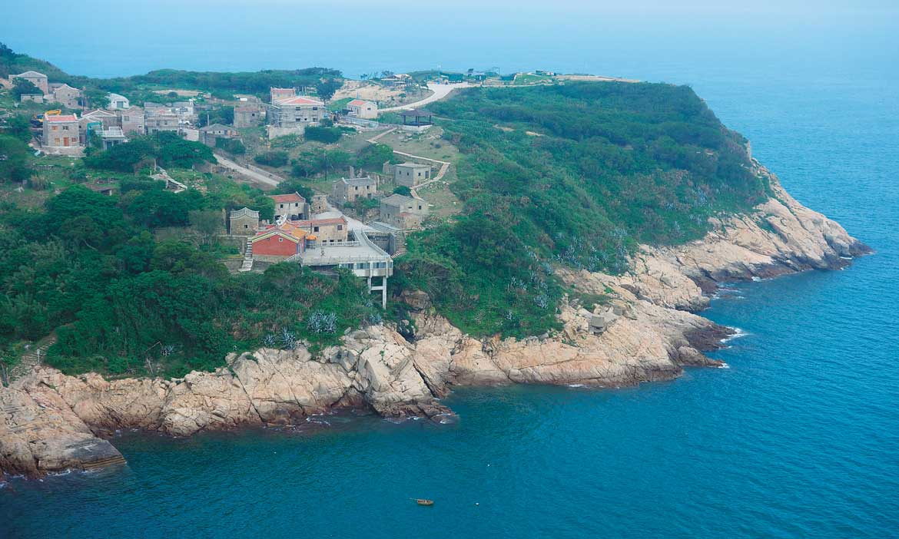
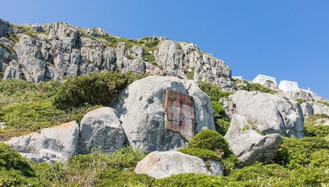

探索馬祖
馬祖群島是台灣西北方的美麗群島，擁有壯麗的海岸線和獨特的自然景觀。以下是馬祖著名的景點：

藍眼淚
馬祖藍眼淚是夜光藻群聚於馬祖岸邊，形成夜晚發光的現象。 海面上夜光藻經風浪吹撫，或拍打礁岸，激出的點點藍色螢光，有時綻放整片夢幻藍光，有時隨著水波漣漪，忽隱忽現，宛如灑落凡間的點點繁星，就在你指間輕輕溜過，就是這種如真似夢般的美景，吸引來自各地的尋夢人，一睹馬祖迷人的丰采。

戰爭和平紀念公園
位處大沃山12據點處的「戰爭和平紀念公園主題館」於2010年3月29日正式揭牌。天氣晴朗時，可遠眺大陸海岸線，相對於對立時代的緊張氣氛，更能與「戰爭和平」主題相映其趣。該館以「感動‧回憶」為展示主題，包括軍事沿革大事紀、軍用品展示區、軍民生態文化等展區。透過文字及影像，這些關於馬祖長達近半世紀的軍管時期，以及軍方與民間共同走過的歲月，在主題館內一幕幕地完整重現，讓參觀民眾可以遙想當年戰地居民的蓽路藍縷。戰爭和平紀念公園不僅是全臺首座以「戰爭與和平」和「感動與回憶」為主題的博物園區，遊客穿梭於昔日據點中，搭配文史資料的展示，更能達到全民國防和寓教於樂的效果。

東莒島
東莒島位處馬祖列島的最南端，面積2.6415平方公里，海岸長度約13.22公里，舊名為「東沙」、「東肯」或稱為「東犬」，四面環海盛產魚、蝦、蟹、蛤等是一個自給自足的小海島；除了東莒島外還有犀牛嶼、永留嶼、林坳嶼、大嶼、小嶼、鐵尖山等島嶼組成為─東莒列島。

馬祖紀念碑
地方居民為褒揚烈士的英勇精神，於民國71(1982)年10月在上梅石山腰間建立“黃花崗之役連江縣十烈士紀念碑”， 以表彰其不朽事蹟。 碑體以白色花崗岩刻成，上有青天白日徽；基座刻有烈士的名與事蹟，氣勢十分雄偉！